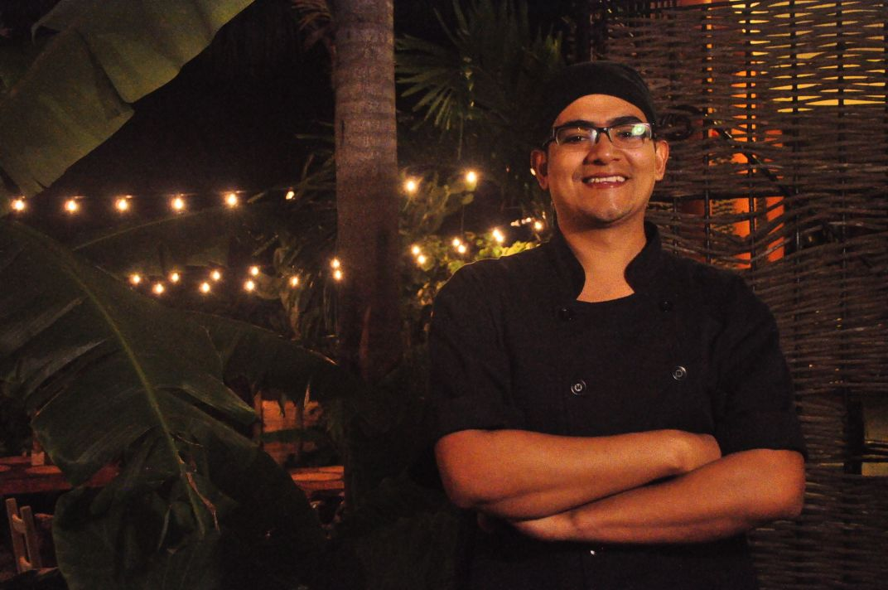

The Visionary Behind the Lab
Welcome to DROE Fermentation Lab. My name is Oswald Diaz, a Brewing Technician and Sous-Chef by trade. This is the space where I bring to life the culmination of my professional journey—a dedicated laboratory born from the passionate fusion of my two greatest vocations.
Fermentation is not just a technique; it is a meticulous art form where technical precision meets culinary soulful creativity. Here, I respect the ancient processes of life, crafting every product from scratch with deep dedication and unwavering patience.
Over the years, I have honed my expertise in a diverse array of living cultures. My portfolio includes, but is not limited to, the intricate craft of Kombucha, Yogurt, Cheeses, Kefir, Vinegars, and much more.
Each batch is a commitment to quality, designed not only to offer a premium, natural alternative for gut health but to elevate the culinary experience of my clients with authentic, living flavors. Discover the art of tradition, perfected.